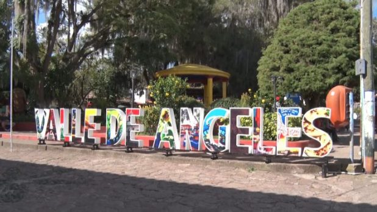
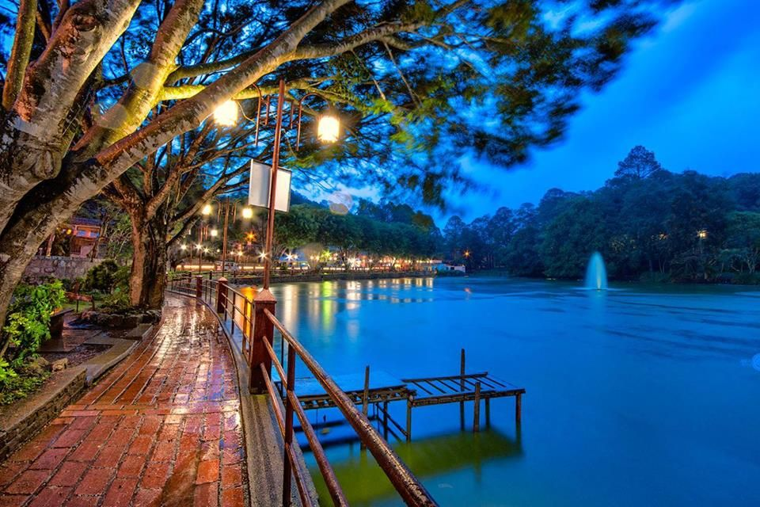
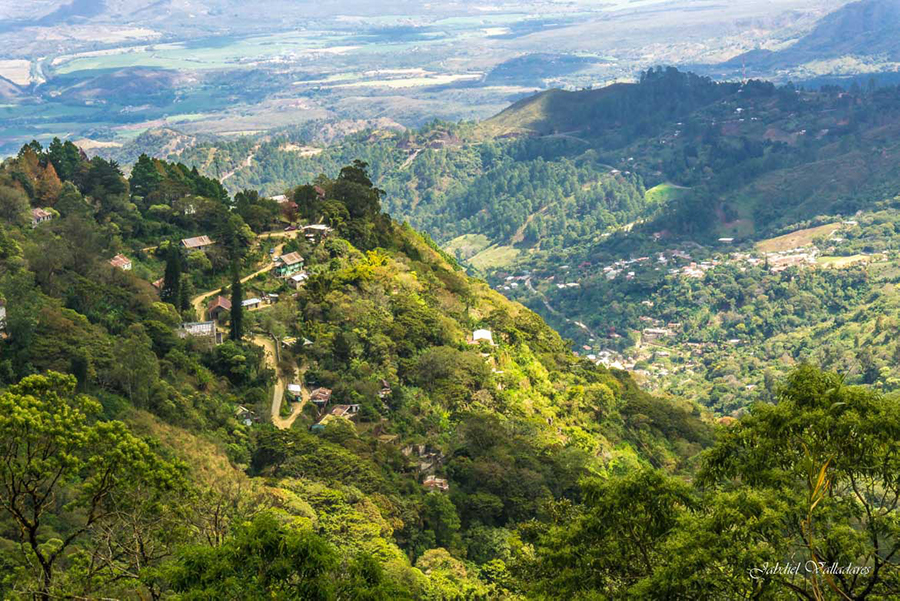
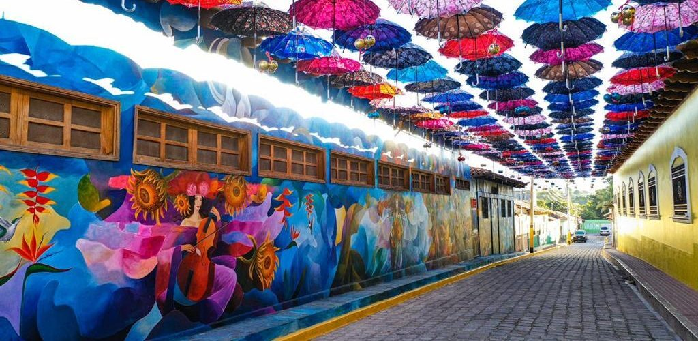
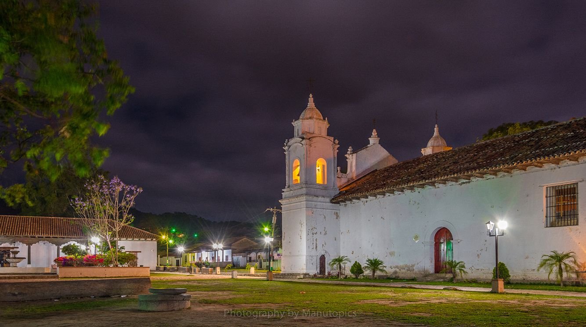
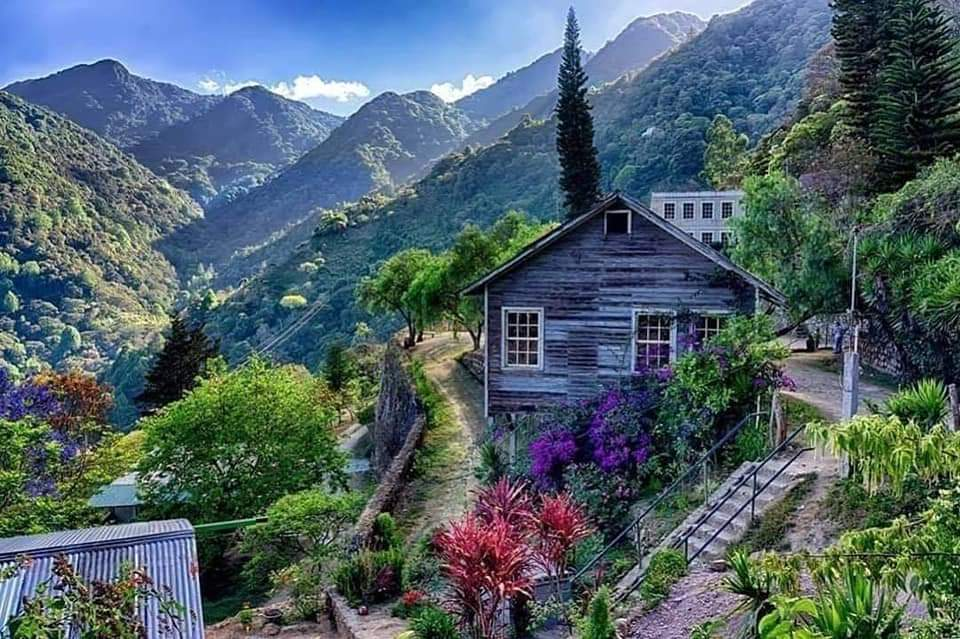
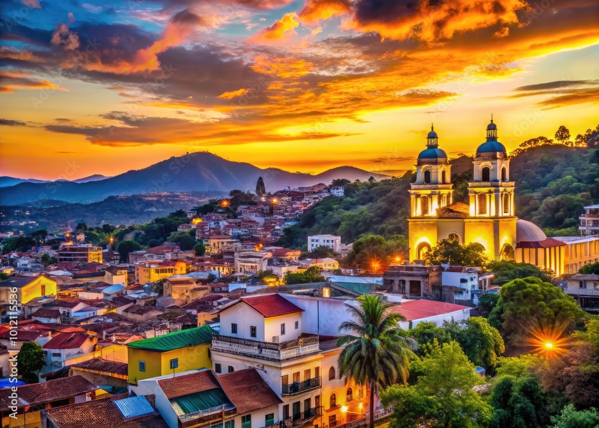
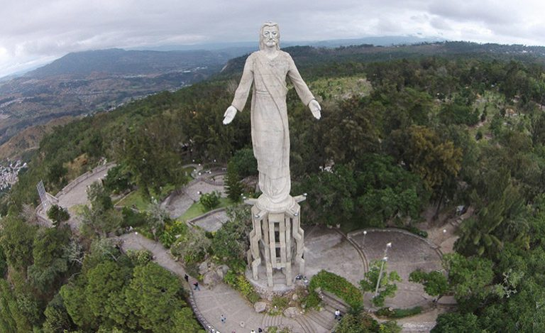
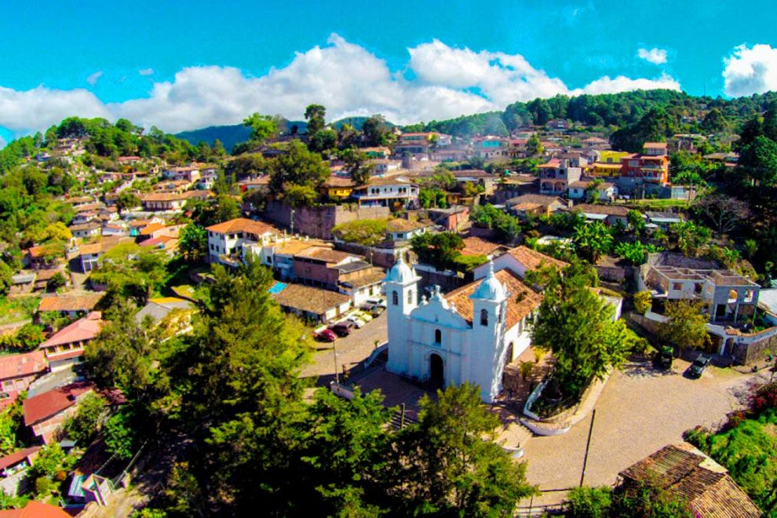

Lugares turísticos de Francisco Morazán
Descubre algunos de los destinos que puedes visitar en este departamento hondureño.

Valle de Ángeles
Pueblo turístico conocido por sus artesanías, restaurantes y ambiente tradicional.

Santa Lucía
Un pueblo pintoresco con calles tradicionales, vistas agradables y espacios para pasear.

Parque Nacional La Tigra
Área natural de bosque nublado, senderos y una gran variedad de flora y fauna.

Cantarranas
Municipio conocido por sus murales, sus calles coloridas y su ambiente cultural.

Ojojona
Pueblo de tradición artesanal, arquitectura histórica y calles con encanto.

San Juancito
Comunidad rodeada de montañas y vinculada a la historia minera de la región.

Tegucigalpa
Capital de Honduras, con museos, plazas, iglesias y sitios de interés histórico.

Cerro El Picacho
Mirador conocido por sus vistas panorámicas de Tegucigalpa y sus alrededores.

Parque de Valle de Ángeles
Espacio para descansar y disfrutar del ambiente del centro del municipio.